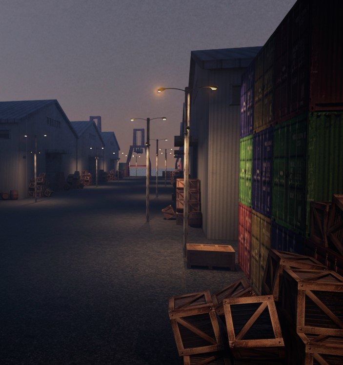
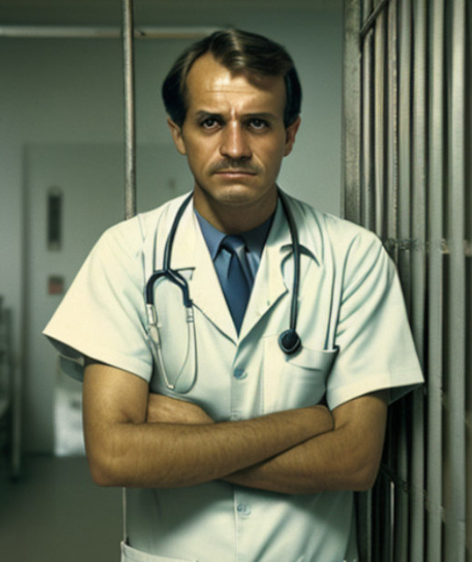
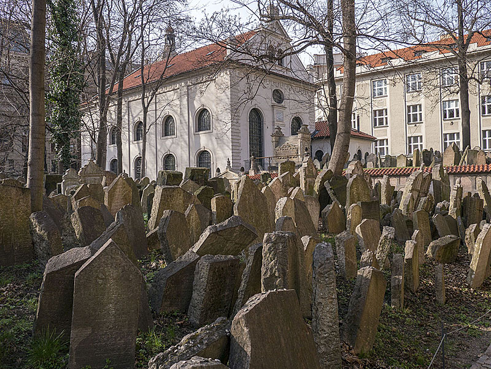

Caos sul Moldava
Attimi di terrore al porto

Nella serata di ieri 31 dicembre 1989, una tubatura di gas metano che corre sotto al magazzino
portuale sito presso le rive del fiume Moldava, appena fuori dalla città vecchia, ha preso
improvvisamente fuoco e ha ridotto in cenere uno dei magazzini adibiti allo stoccaggio delle merci
che ogni settimana arrivano al porto fluviale. All'arrivo dei Vigili del Fuoco l'incendio è stato
domato e fortunatamente non sono state dichiarate vittime o feriti, grazie soprattutto al tardo orario
che vede la maggior parte dei lavoratori in forze al porto già lontani dal posto all'ora dell'incidente.
Non si conoscono ulteriori dettagli sulle cause scatenanti ma indiscrezioni rivelano che il magazzino
andato in fiamme fosse proprietà di Tynske Masarik.
frantushku memorial: paura per il dott. chandra suresh
Ci sia aspetta sempre che il primo dell'anno veda gli ospedali gremiti di cittadini incauti che
hanno subito danni dal maneggiare maldestramente i fuochi d'artificio, ma nessuno si sarebbe aspettato
quello che è accaduto nella prima ora del primo gennaio al Frantishku Memorial, principale ospedale
della città di Praga: Omar Hamlik, 38 anni, disoccupato, probabilmente in ospedale per ricevere il supporto
previsto dalla sua tossicodipendenza, è improvvisamente andato fuori di senno spaventando il personale sanitario
e trascinando una guardia giurata addetta alla sicurezza in una corsa rocambolesca per le strade della città,
conclusasi con il suo arresto.
Nello stesso momento il Dott. Chandra Suresh (nella foto affianco), noto ematologo laureatosi presso l'Indian
Institute of Science e di stanza a Praga per approfondire i suoi rinomati studi sulle nuove malattie del sangue,
ha subito un trauma cranico a seguito di una caduta accidentale le cui dinamiche sono al momento ignote.
Il Dott. Suresh non ha rilasciato interviste alle varie testate giornalistiche ma alcune indiscrezioni
lascerebbero pensare che l'incidente coinvolga anche altri due operatori sanitari neo assunti al Frantishku
Memorial. Non esistono al momento maggiori dettagli sull'accaduto né sulla prognosi che riguarda il Dott. Suresh.

cimitero ebraico vandalizzato: indignazione per le lapidi danneggiate
Durante la mattinata primo gennaio, a seguito di una segnalazione da parte di un parente di una delle
vittime sepolte, diverse lapidi del Cimitero Ebraico nella Città Vecchia sono risultate
brutalmente vandalizzate ed il terreno, storicamente protetto dalla Soprintendenza dei Beni
Culturali, è stato smosso in più punti. La polizia annovera negli atti di vandalismo anche un tentativo
di riesumazione delle salme che al momento non sembra fortunatamente andato a buon fine. I tecnici chiamati
per la valutazione dei danni hanno riferito che lo storico mausoleo è rimasto intatto e privo di qualsivoglia
deturpazione mentre la polizia è ancora sulle tracce del custode di cui non si hanno notizie dal momento in cui
le forze dell'ordine sono arrivate sul posto. Il custode, Nikita Zharkov, 68 anni, immigrato dalla Russia dopo
la fine della seconda guerra mondiale, non risulta avere parenti o contatti in città ed i dettagli della
sua assunzione risalgono ad un periodo antecedente all'istituzione della Repubblica Ceca, rendendo le indagini più
complesse del previsto.
